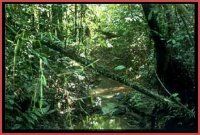
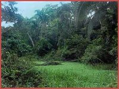
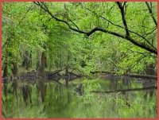
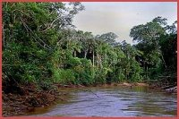

Deze soort houdt zich voornamelijk op in de Igapó. Dit is
een verzamelnaam voor dat deel van de jungle dat het grootste deel van het
jaar onder water staat. Vanaf ongeveer september valt een deel van dit gebied
tijdelijk droog. Ook de moerasachtige gebieden die hieraan grenzen zijn deel
van het verspreidingsgebied van de kaaimanteju. Ruwweg zou je dus kunnen stellen
dat deze hagedissensoort zich ophoudt in de laaglandgedeeltes in de omgeving
van de rivier de Amazone of een van haar talloze zijrivieren.
De biotoop waarin de kaaimanteju´s leven is dus erg waterrijk, maar eveneens
weelderig begroeid.
Gedurende de dag schijnen ze voornamelijk in het water te blijven, maar ´s
nachts kruipen ze ook wel "op het droge" om een schuilplaats te zoeken.
Kaaimanteju´s zijn goede klimmers en worden ook wel in bomen en struiken aangetroffen.
De enige andere soort van het genus , Dracaena paraguayensis,
komt voor in de volgende landen: Paraguay, Brazilië (Mato Grosso) en Bolivia
(Santa Cruz).
Over de biotoop van déze soort heb ik niks kunnen vinden, maar je mag aannemen
dat het niet veel zal verschillen van dat van Dracaena guianensis.
{kind=link}